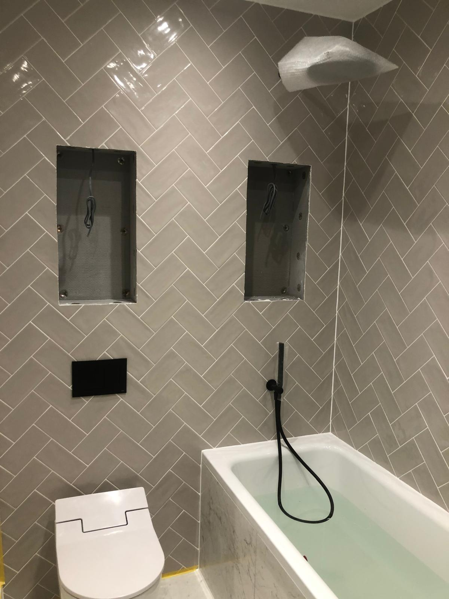
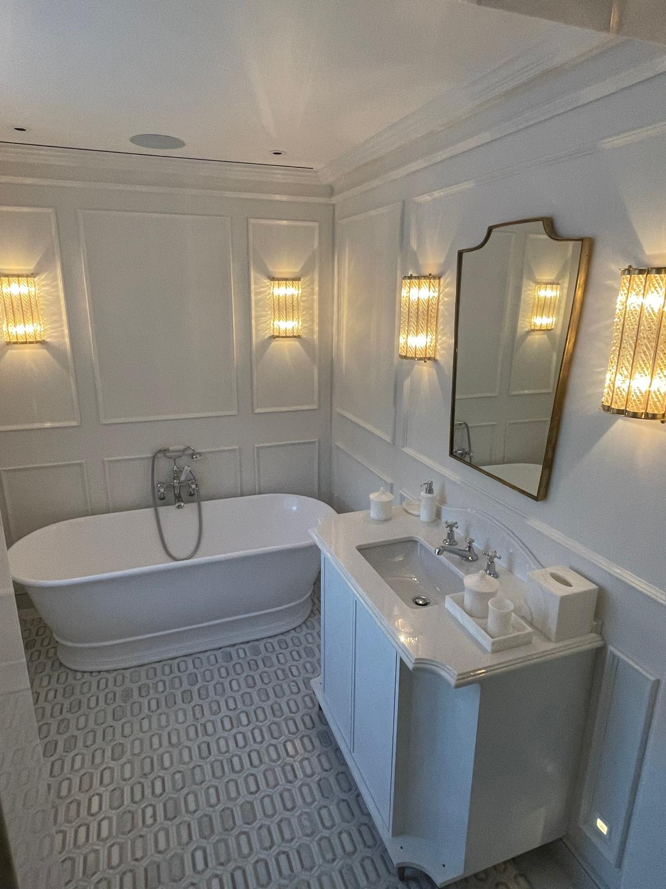
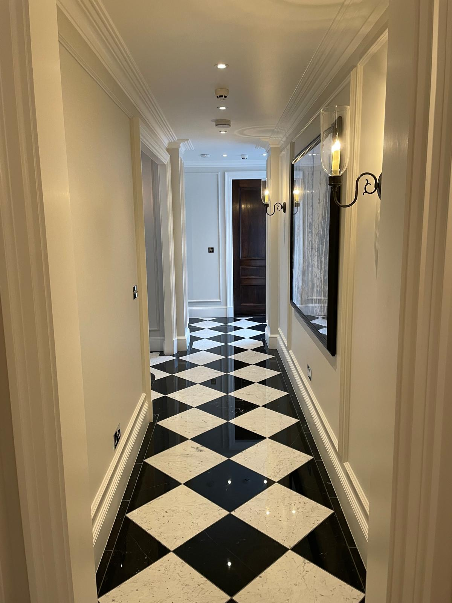
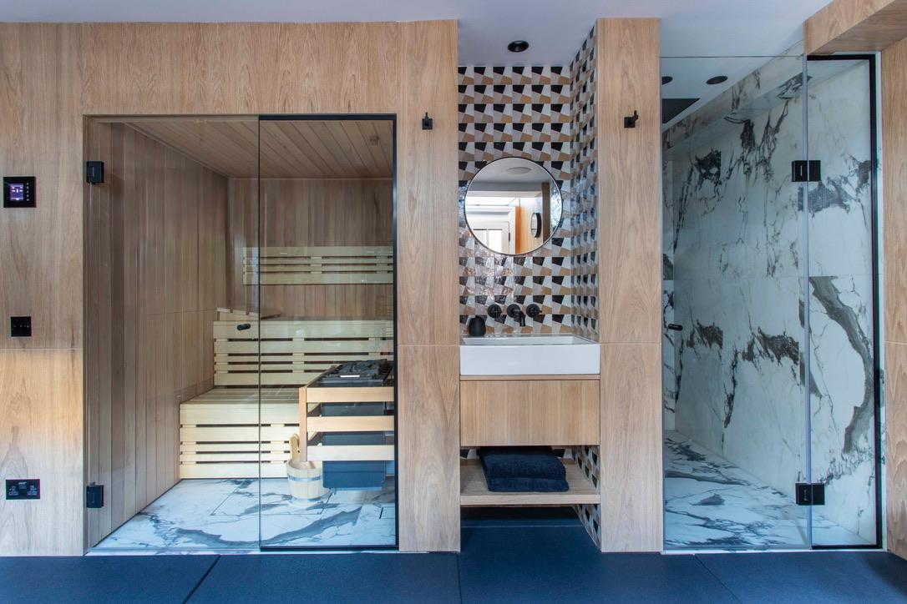
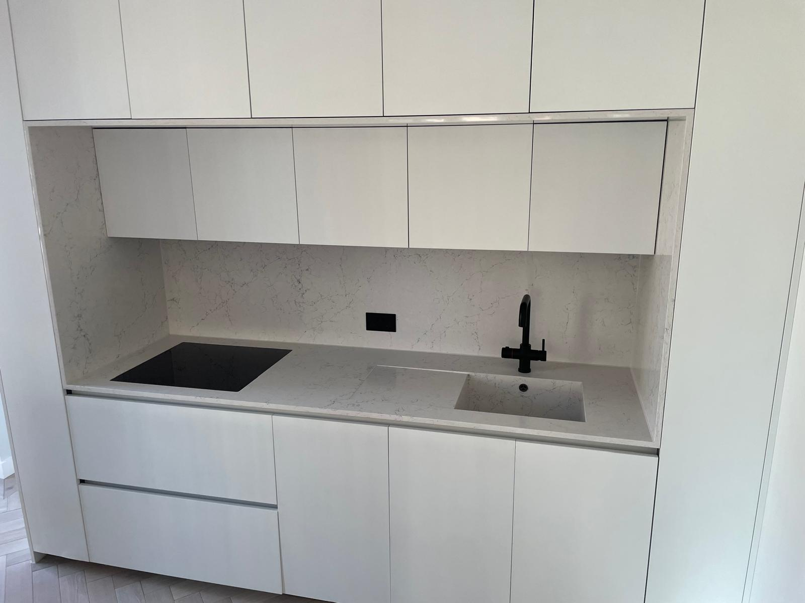
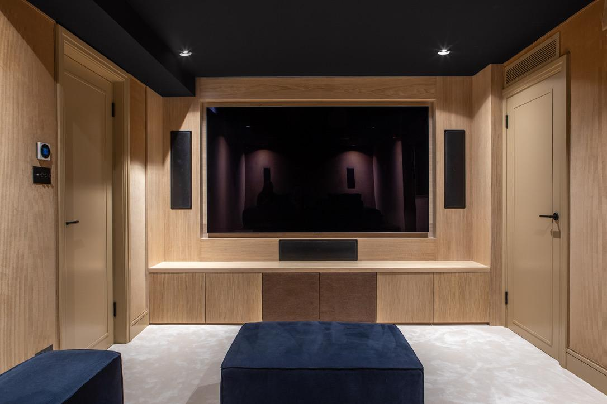
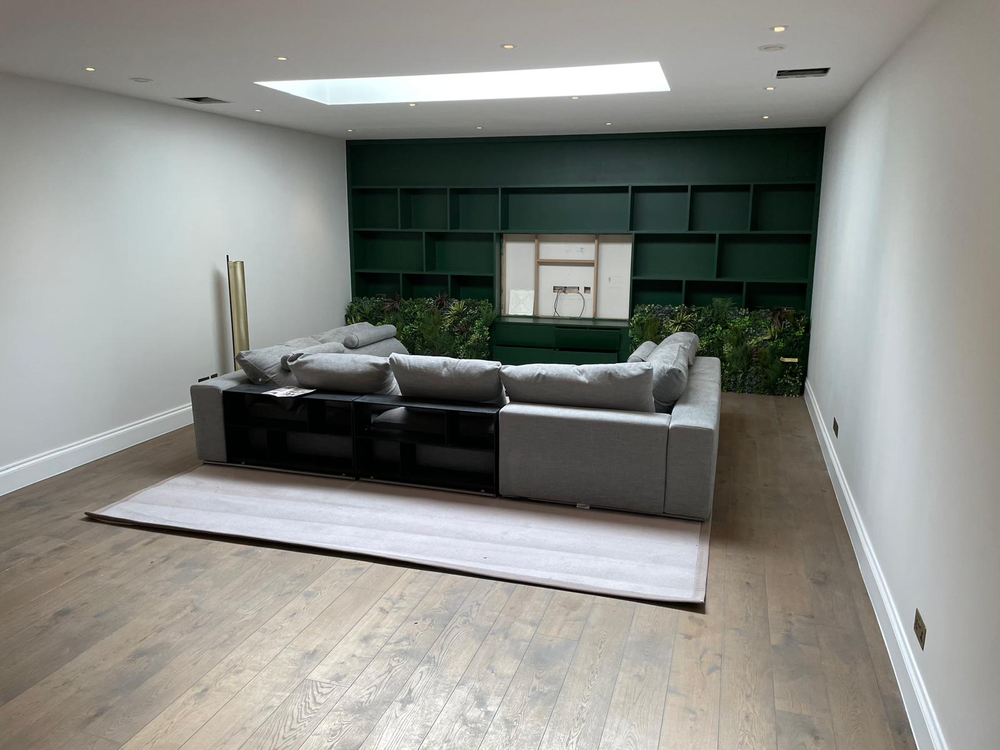
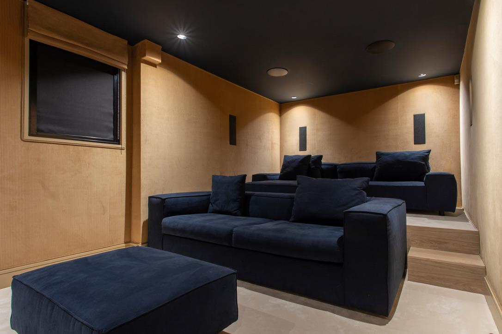
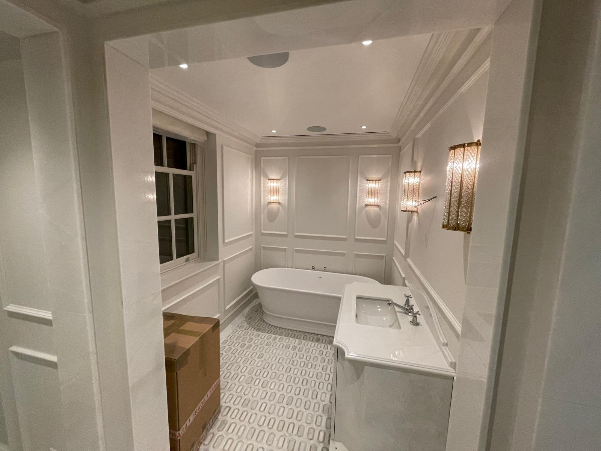
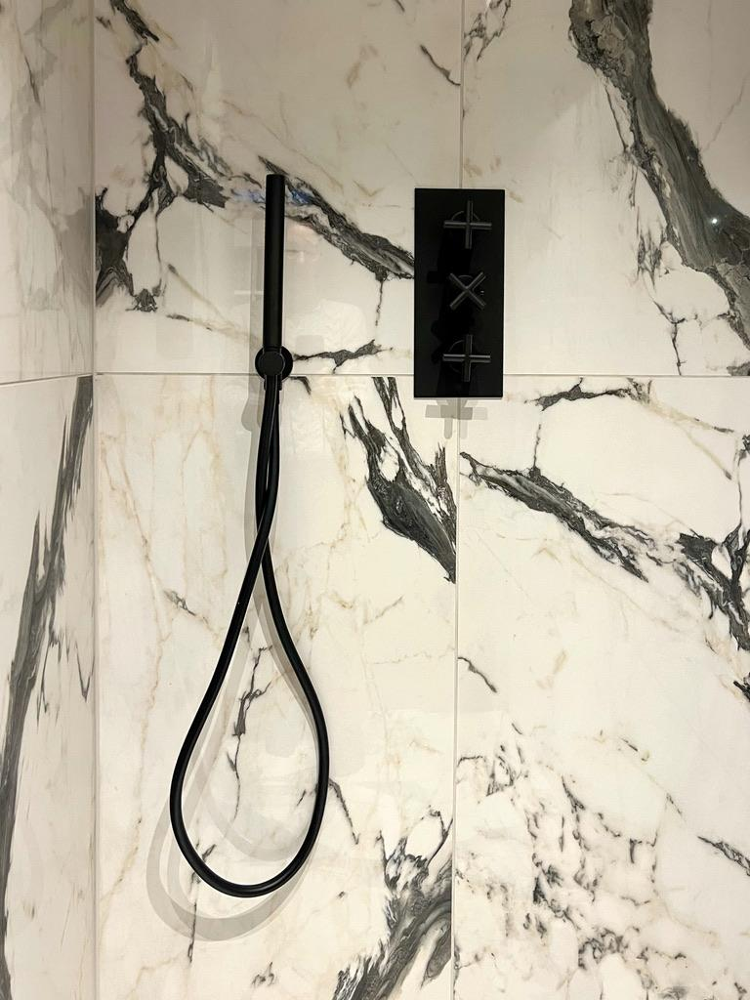

Vonios remontas Lentvaryje ir Vilniuje
Demontavimas, hidroizoliacija, plytelės, dušo zonos, santechnikos taškai, baldų ir įrangos montavimas.
Vonios remontas Vilniuje Vonios remontas LentvaryjeVonios, virtuvės ir buto remontas Lentvaryje
Nuo pirmos apžiūros iki užbaigimo. Aiškiai sutariame darbų apimtį, kainą, medžiagas, terminus ir kas už ką atsakingas.
Greičiausia pradžia: atsiųskite 3-6 nuotraukas arba trumpą video ir parašykite objekto vietą.
Nuotraukos, video arba apžiūra vietoje.
Darbai, medžiagos ir papildomos rizikos atskirai.
Mažiau netikėtumų remonto metu.
Pozicija
Leonamai.lt skirta žmonėms, kuriems reikia patikimo meistro Lentvaryje, Vilniuje, Trakuose ir aplink. Padėsime įvertinti būklę, sudėlioti darbus pagal prioritetus ir rasti praktišką sprendimą pagal biudžetą.
Apie Leonamai.lt
Leonamai.lt — remonto ir apdailos darbų paslauga Lentvaryje, Vilniuje, Trakuose ir Vilniaus regione. Pagrindinės paslaugos: vonios remontas, plytelių klijavimas, hidroizoliacija, buto apdaila, virtuvės paruošimas ir smulkūs statybos darbai.
Paslaugos
Demontavimas, hidroizoliacija, plytelės, dušo zonos, santechnikos taškai, baldų ir įrangos montavimas.
Vonios remontas Vilniuje Vonios remontas LentvaryjeSienų, grindų ir lubų paruošimas, gipskartonis, dažymas, grindų dangos, durys ir grindjuostės.
Buto apdaila VilniujeElektros ir santechnikos taškai, sienų bei grindų apdaila, plytelės ir paruošimas baldų montavimui.
Tikslūs kampai, siūlės, nuolydžiai ir mazgai, nuo kurių priklauso ilgaamžiškas rezultatas.
Plytelių klijavimas VilniujePertvaros, nišos, taisymai, paruošimai ir kiti darbai, kuriuos patogu sutvarkyti kartu su remontu.
Jeigu dar nežinote nuo ko pradėti, padėsime sudėlioti darbų seką, prioritetus ir realistišką biudžetą.
Sąmata be spėlionių
Tiksli remonto kaina priklauso nuo objekto būklės, pasirinktų medžiagų, darbų apimties ir paslėptų rizikų. Todėl prieš skaičiuojant kainą verta aiškiai atsakyti į kelis praktinius klausimus.
Pasitarti telefonuKodėl verta tartis
Atlikti darbai

Vonios plytelės

Vonios remontas

Grindų plytelės

Pirties zona

Virtuvė

Interjero apdaila

Buto apdaila

Poilsio kambarys

Klasikinė vonia

Santechnika

Vonios detalės
Galerijoje rodome realius užbaigtus darbus: vonias, grindis, virtuvės zonas, pirties ir interjero apdailą.
Peržiūrėti pilną darbų galerijąProcesas
DUK
Taip. Vonios yra vienas pagrindinių darbų: paruošimas, hidroizoliacija, plytelės, santechnikos taškai, dušo zona ir montavimas.
Vonios remonto kaina Lentvaryje priklauso nuo patalpos dydžio, demontavimo, hidroizoliacijos, plytelių, santechnikos taškų ir pasirinktų medžiagų. Orientacijai pakanka 3-6 nuotraukų arba trumpo video, bet tikslesnei sąmatai reikia aiškios darbų apimties arba apžiūros.
Plytelių klijavimo kaina Vilniuje priklauso nuo pagrindo paruošimo, plytelių formato, kampų, nišų, nuolydžių ir siūlių sudėtingumo. Tikslesniam įvertinimui naudinga atsiųsti patalpos plotą, plytelių dydį, nuotraukas ir informaciją, ar reikės hidroizoliacijos.
Taip. Vonios kambaryje hidroizoliacija yra svarbi darbo dalis prieš plytelių klijavimą, ypač dušo zonoje, prie grindų ir sienų jungčių. Prieš pradedant darbus įvertiname pagrindą, drėgnas zonas ir mazgus.
Taip, galime atlikti dalinį vonios remontą arba sutvarkyti tik dušo zoną. Tokiu atveju pirmiausia įvertiname esamą hidroizoliaciją, plytelių būklę, nuolydžius ir santechnikos taškus, kad sprendimas nebūtų tik kosmetinis.
Iš nuotraukų galima duoti orientaciją. Tikslesnei sąmatai reikia aiškios darbų apimties arba apžiūros.
Galime padėti su kiekiais ir praktiškais pasirinkimais. Ar medžiagos įeina į kainą, sutariame prieš pradedant darbus.
Taip, galime dirbti su kliento nupirktomis medžiagomis. Prieš pradedant verta patikrinti kiekius, plytelių formatą, klijus, glaistus, hidroizoliaciją ir kitus priedus, kad darbai nestotų dėl trūkstamų arba netinkamų medžiagų.
Taip, galime padėti apskaičiuoti orientacinį plytelių kiekį pagal patalpos matmenis, sienų aukštį, grindų plotą ir pasirinktą plytelių formatą. Paprastai verta numatyti rezervą pjovimui, brokui, nišoms, kampams ir galimam remontui ateityje.
Vonios remonto trukmė priklauso nuo darbų apimties, demontavimo, pagrindo būklės, hidroizoliacijos džiūvimo, plytelių kiekio ir įrangos montavimo. Mažesni darbai gali trukti trumpiau, o pilnam remontui reikia suplanuoti etapų seką.
Vonios remontą verta pradėti nuo aiškios darbų apimties: ką reikia demontuoti, kur bus santechnikos taškai, kokios plytelės, ar reikės elektros ir kokia įranga bus montuojama. Greičiausia pradžia yra atsiųsti nuotraukas, matmenis ir norimą rezultatą.
Taip, kartu su vonios remontu galime sutvarkyti ir smulkius apdailos darbus: sienų pataisymus, gipskartonio mazgus, grindjuostes, dažymą, nišas ar kitus paruošimus. Tai patogu, kai norisi vienu kartu užbaigti kelias susijusias zonas.
Taip, dirbame Trakuose ir aplinkinėse vietovėse. Atliekame vonios remontą, plytelių klijavimą, buto apdailą, virtuvės paruošimą ir smulkius statybos darbus. Dėl konkretaus objekto patogiausia susisiekti telefonu ir atsiųsti kelias nuotraukas.
Taip, dirbame Vilniaus rajone ir Vilniaus regione. Dažniausiai vertiname objektus pagal vietą, darbų apimtį, terminus ir nuotraukas. Jei objektas toliau nuo Lentvario, Vilniaus ar Trakų, dėl atvykimo galima tartis individualiai.
Taip, dėl apžiūros galima tartis telefonu. Prieš atvykstant naudinga atsiųsti nuotraukas arba trumpą video, objekto vietą, patalpos dydį ir norimų darbų aprašymą. Taip apžiūra būna tikslesnė ir lengviau pasiruošti sąmatai.
Tikslesnei sąmatai atsiųskite 3-6 objekto nuotraukas arba trumpą video, patalpos dydį, vietą, norimų darbų sąrašą ir informaciją apie medžiagas. Taip galima greičiau suprasti darbų apimtį, rizikas ir klausimus, kuriuos dar reikia patikslinti.
Dalinis remontas tinka, kai problema aiški ir pagrindiniai mazgai yra tvarkingi. Pilnas vonios remontas dažniau reikalingas, kai prasta hidroizoliacija, netinkami nuolydžiai, seni santechnikos taškai, pažeistos plytelės arba planuojamas naujas išdėstymas.
Lentvaris, Vilnius, Trakai, Vilniaus rajonas ir Vilniaus regionas. Dėl tolimesnių objektų galima tartis atskirai.
Kontaktai
Atsiųskite nuotraukas arba video, trumpą aprašymą ir vietą. Atsakysime, ką verta daryti pirmiausia ir kokių klausimų dar reikia tiksliai sąmatai.